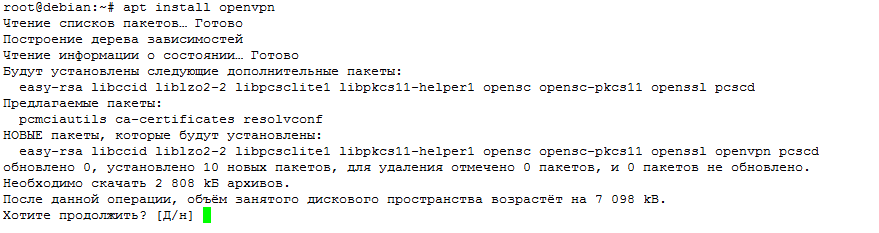
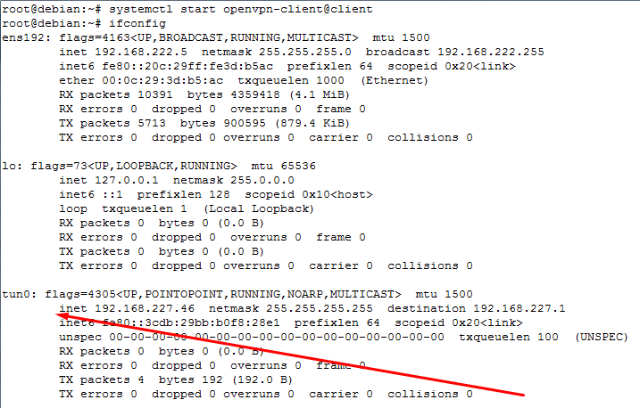

Сегодня разберём как подключить Debian к микротику посредствам OpenVPN. Ранее мы уже разбирали как поднять VPN сервер на микротике, поэтому будем разбирать как подключится к нему с Linux.
Пожалуй, в Дебиане настройка выполняется самым простым образом. Первоначально нам надо установить пакет. Никаких сложностей, воспользуемся обычным менеджером пакетов, никаких новых репозиториев нам не нужно.
apt install openvpn

после установки переходим в каталог /etc/openvpn/client и создаём файлик client.conf следующего содержания:
proto tcp-client
# в этой строчке мы указываем адрес в интернете нашего микротика
remote 123.123.123.123
dev tap
nobind
persist-key
tls-client
#указываем имена публичного CA сертификата
ca ca.crt
# публичного сертификата клиента
cert client.crt
# и его закрытый ключ
key client.key
#каждые 10 секунд проверять туннель, если нет ответа 120 секунд, переподключаться
keepalive 10 120
verb 3
#проверка сертификата сервера
#https://openvpn.net/index.php/open-source/documentation/howto.html#mitm
remote-cert-tls server
cipher AES-256-CBC
auth SHA1
pull
# эта строка задаёт файл с логином-паролем которые мы прописывали в PPP-Secrets на микротике
auth-user-pass auth.cfg
# в этой части мы задаём настройки сетей которые находятся за микротиком,
# в моём случае 192.168.1.0 с маской 255.255.255.0 это сеть,
# а 192.168.221.1 это адрес микротика который мы указывали в PPP профиле
route-delay 2
route 192.168.1.0 255.255.255.0 192.168.221.1
в этой же папке создаём файл auth.cfg куда записываем логин-пароль:
user
123
Сюда же скидываем сертификаты: клиента, CA и секретный ключ клиента. После того как все файлы готовы можно запускать службу. В 9 дебиане это делается через systemd
systemctl start openvpn-client@client
Тут добавлю немножко деталей. openvpn-client – значит запустить конфиг из папки /etc/openvpn/client, а @client значит запустить конфиг с названием client. Соответственно таким же образом мы можем все файлы накидать в папку server и запуститься командой systemctl start openvpn-server@client. В какую именно папку закидывать конфиг и как запускаться зависит только от Вас.
Проверяем всё ли в порядке командой ifconfig, должен появится новый интерфейс

Если интерфейса нет, смотрим лог файлы:
tail -n 100 /var/log/syslog
Если всё в порядке, добавляем службу в автозапуск:
systemctl enable openvpn-client@client
Created symlink /etc/systemd/system/multi-user.target.wants/openvpn-client@client.service → /lib/systemd/system/openvpn-client@.service
Проверить, что старт сервиса прописался в автозапуск, можно командой:
systemctl list-dependencies multi-user.target
После этих действий соединение должно устанавливаться автоматически при запуске компьютера.